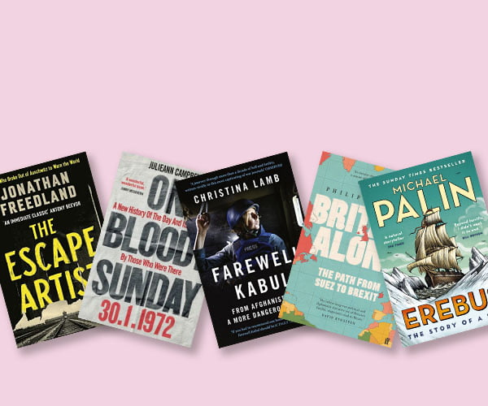

May 2023

The extraordinary story of a man
who escaped from Auschwitz and
who informed the world of the
true scale of the Nazi killing
machine. and nature of the very
funny. Rudolf Vrba wrote a report
detaling the true horror of
Auschwitz. A compelling and
brutal read. This book needs
a wide audience.
13 civil rights innocent activists
were murdered in January 1972.
'On Bloody Sunday' unfolds
before us an extraordinary
human drama, as we experience
one of the darkest moments in
modern history. A powerful piece
of work, highly recommended.
A very sad but compelling read.
I'm a huge fan of Christina Lamb
and I came late to this.
'Farewell
Kabul' tells how the West turned
success into defeat in the longest
war fought by the United
States
in its history and by Britain since
the Hundred Years War.
Learnt
so much from this revelatory
and personal account. What a
tragedy for all involved.
A comprehensive analysis of
an extraordinary period in British
and European history, and a
gripping drama of self-delusion
and unpreparedness. It maps out
the road to Brexit and our
mistakes and delusions are
laid bare. A difficult read for
any Brexiters. As a remainer I
found it an uncomfortable read.
Not my usual reading matter
but this book was a revelation.
This is a wonderfully evocative
and epic account, written by
a
master explorer and storyteller.
In September 2014 the wreck of
HMS Erebus was discovered at
the bottom of the Canadian Arctic.
A thrilling read, what an tragic
end to a journey full of
intrigue.